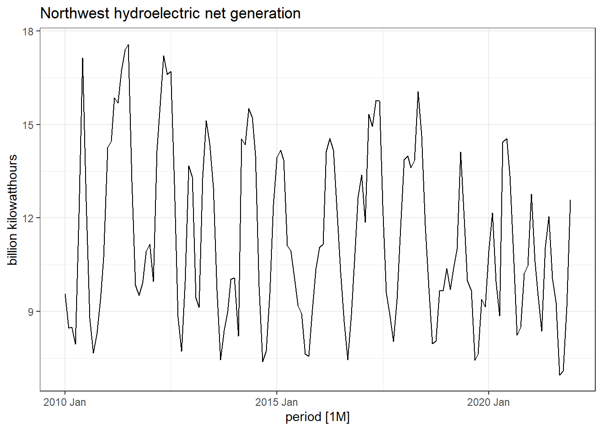
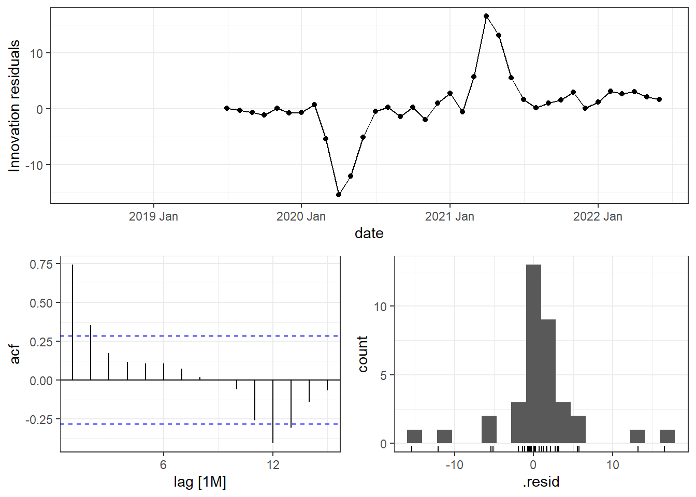
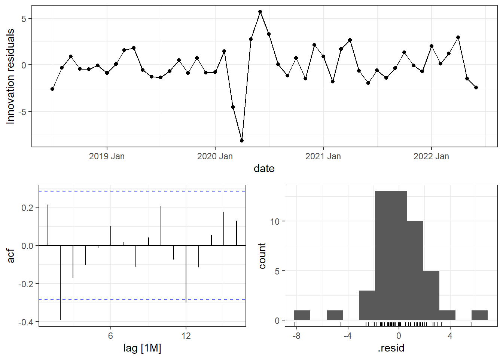

knitr::opts_chunk$set(
echo = TRUE,
message = FALSE,
warning = FALSE
)
library(tidyverse)
library(fpp3)
data.list <- readRDS("Data.RDS")
data <- data.list[[1]]
hydro.cap <- data.list[[2]]
gc.gen <- data.list[[3]]Assignment #1
Setup
Preliminary Analysis
Data Prep
train <- data %>%
filter(year(period) < 2022)# %>%
# filter(year(period) >= 2018)
test <- data %>%
filter(year(period) == 2022)Visualizations
Time Plot
train %>%
autoplot(value) +
theme_bw() +
ggtitle("Northwest hydroelectric net generation") +
ylab("billion kilowatthours")
Seasonal Plot
train %>%
gg_season(value, labels = "both") +
theme_bw() +
ggtitle("Seasonal Plot: Northwest hydroelectric net generation") +
ylab("billion kilowatthours")Seasonal Subseries Plot
train %>%
gg_subseries(value) +
theme_bw() +
geom_point() +
ggtitle("Seasonal Plot: Northwest hydroelectric net generation") +
ylab("billion kilowatthours")Lag Plot
train %>%
gg_lag(value, geom = "point", lags = 1:12) +
theme_bw() +
ggtitle("Lag Plot: Northwest hydroelectric net generation") +
ylab("billion kilowatthours")
Autocorrelation
train %>%
ACF(value) %>%
autoplot() +
theme_bw() +
ggtitle("Autocorrelation Plot: Northwest hydroelectric net generation")Time Series Decomposition
# Guerrero lambda
lambda <- data %>%
features(value, features = guerrero) %>%
pull(lambda_guerrero)
# Trend captures water-year
data %>%
model(
STL(box_cox(value, lambda) ~ trend(window = 19) + season(window = 21), robust = TRUE)
) %>%
components() %>%
autoplot() +
theme_bw()
Modeling & Forecast
Estimation
fit <- train %>%
model(
# Naive
"naive" = NAIVE(value),
# SNAIVE
"snaive" = SNAIVE(value ~ lag("year")),
# ETS Additive
"ets_add" = ETS(value ~ error("A") + trend("A") + season("A")),
# ETS Multiplicative
"ets_mult" = ETS(value ~ error("M") + trend("A") + season("M")),
# ETS Auto
"ets_auto" = ETS(value)
)Training Set Metrics
glance(fit)# A tibble: 5 × 9
.model sigma2 log_lik AIC AICc BIC MSE AMSE MAE
<chr> <dbl> <dbl> <dbl> <dbl> <dbl> <dbl> <dbl> <dbl>
1 naive 4.22 NA NA NA NA NA NA NA
2 snaive 6.22 NA NA NA NA NA NA NA
3 ets_add 2.28 -409. 851. 856. 902. 2.02 3.82 1.06
4 ets_mult 0.0176 -407. 848. 853. 899. 2.16 4.08 0.0941
5 ets_auto 0.0186 -409. 849. 852. 893. 2.13 3.95 0.0981Residuals
fit.resid <- augment(fit)
autoplot(fit.resid, .innov) +
facet_grid(.model ~ ., scales = "free")
NAIVE
fit %>%
select(naive) %>%
gg_tsresiduals()SNAIVE
fit %>%
select(snaive) %>%
gg_tsresiduals()ETS - Additive
fit %>%
select(ets_add) %>%
gg_tsresiduals()
ETS - Multiplicative
fit %>%
select(ets_mult) %>%
gg_tsresiduals()
ETS - Auto
fit %>%
select(ets_auto) %>%
gg_tsresiduals()Forecast
fx <- fit %>%
forecast(new_data = test)
fx %>% autoplot(
test,
level = NULL
) +
theme_bw() +
ggtitle("Forecasts for Northwest Hydro Generation")
Test Set Metrics
accuracy(fx, test)# A tibble: 5 × 10
.model .type ME RMSE MAE MPE MAPE MASE RMSSE ACF1
<chr> <chr> <dbl> <dbl> <dbl> <dbl> <dbl> <dbl> <dbl> <dbl>
1 ets_add Test -2.39 3.07 2.49 -25.6 26.3 NaN NaN 0.356
2 ets_auto Test -1.79 2.64 2.03 -19.5 21.2 NaN NaN 0.405
3 ets_mult Test -2.98 3.65 3.07 -30.5 31.1 NaN NaN 0.425
4 naive Test -1.32 2.93 2.42 -18.5 25.9 NaN NaN 0.454
5 snaive Test 1.31 2.17 1.73 9.71 14.0 NaN NaN 0.322Cross Validation
Data Preparation
# Create CV dataset
train.cv <- train %>%
stretch_tsibble(.init = 24, .step = 12)
test.cv <- test %>%
stretch_tsibble(.init = 6, .step = 1)
# Number of groups
max(train.cv$.id)[1] 11Estimate Models
# Fit models
fit.cv <- train.cv %>%
model(
# Naive
"naive" = NAIVE(value),
# SNAIVE
"snaive" = SNAIVE(value ~ lag("year")),
# ETS Additive
"ets_add" = ETS(value ~ error("A") + trend("A") + season("A")),
# ETS Multiplicative
"ets_mult" = ETS(value ~ error("M") + trend("A") + season("M"))
)Training Set Metrics
fit.cv %>%
accuracy() %>%
group_by(.model, .type) %>%
summarize(
across(c(ME, RMSE, MAE, MPE, MAPE, MASE, RMSSE), \(x){mean(x, na.rm = T)})
)# A tibble: 4 × 9
# Groups: .model [4]
.model .type ME RMSE MAE MPE MAPE MASE RMSSE
<chr> <chr> <dbl> <dbl> <dbl> <dbl> <dbl> <dbl> <dbl>
1 ets_add Training -0.0798 1.44 1.10 -1.38 9.49 0.494 0.490
2 ets_mult Training -0.216 1.52 1.14 -2.55 9.64 0.511 0.513
3 naive Training 0.0302 2.22 1.67 -1.55 14.8 0.746 0.747
4 snaive Training 0.606 3.03 2.30 2.21 18.4 1 1 Forecast
fx.cv <- fit.cv %>%
forecast(new_data = test.cv)Test Set Metrics
fx.cv %>%
accuracy(test.cv) %>%
group_by(.model, .type) %>%
summarize(
across(c(ME, RMSE, MAE, MPE, MAPE, MASE, RMSSE), \(x){mean(x, na.rm = T)})
)# A tibble: 4 × 9
# Groups: .model [4]
.model .type ME RMSE MAE MPE MAPE MASE RMSSE
<chr> <chr> <dbl> <dbl> <dbl> <dbl> <dbl> <dbl> <dbl>
1 ets_add Test -1.90 3.12 2.57 -18.8 23.9 NaN NaN
2 ets_mult Test -2.48 3.76 3.12 -23.6 28.4 NaN NaN
3 naive Test 0.290 2.79 2.36 -2.79 21.6 NaN NaN
4 snaive Test -0.703 3.20 2.63 -9.32 23.9 NaN NaN